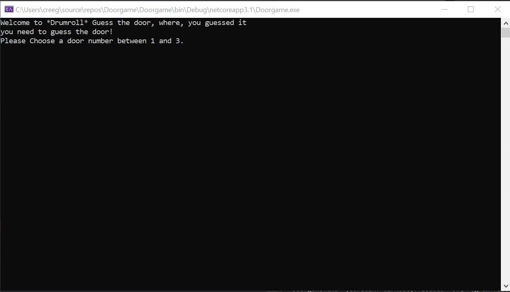

Blinking LEDs
The blinking LEDs Project was the project that took my programming
to the next level. I had already taken some Python and Processing courses
in my middle school, which I had been pretty good, and enthusiastic about.
However, a simple project I did which involved some very basic coding, in a language
I knew nothing of, made me crave more knowledge on coding. This led to me learning a
language known as C#, which I will talk more about later.
C#
As I previously stated C# was the first language I really learned. I can now make complex
WINFORMS (a style of coding in C#, which is like level two on the difficulty scale, level one being console
applications) apps in a matter of minutes. Before this though, I mastered the Console (shown above).
The Console is what you first learn how to use in C#. It teaches you how to take in text from
the user, process that text, do something with it, and give an output. The next level of
programming in C# is, as I said before, WINFORMS. The best way to learn in coding is by doing projects,
and to learn WINFORMS I took on a huge project: BOB.
BOB

Bob is my personal assistant. I fully customized him to my needs, and he is the best programming
achievement I have completed so far. He was my introduction to WINFORMS.
Java
I have taken the the AP Computer Science A class at Fordham Prep, where we learned the Java programming language.
Projects writen in Java and other languages found on my
github. My username is paul10510.
Python
I am also proficient in the programming language Python. I learned Python to be more advanced at reading scripts
for cyber security, and it is now one of my favorite languages that I have learned. Projects can be found on my github.
Other Languages
In the furure I intend to learn more Javascript to create more advanced websites. I also plan to learn Node.JS with react
so I can also understand and work in the back-end of development.
Ultima IV
I have created a mod for the game Ultima IV that replaces the city Yew with Fordham Prep, my highschool.
If you are interested in trying it, download the following zip, unzip it and replace the two game files
with the ones that are in the zip.